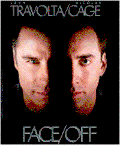
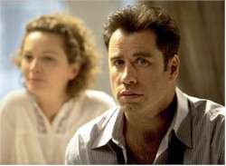
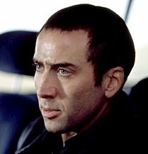
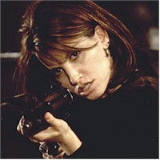

|
||
| Movie Credits | Buy It! |
Face/Off
Review by Eddie Cockrell
Posted 27 June 1997
|  | Directed by John Woo Starring John Travolta, Nicolas Cage,
Joan Allen, Screenplay by Mike Werb and Michael Colleary |
Adventurous moviegoers who succumb to the kinetic spell of Face/Off (and there should be lots of them) are advised to take a deep breath before trying to communicate their enthusiasm to the uninitiated. For as in the very best work of Hong Kong émigré director John Woo, complex melodrama and elaborate mayhem bond with the epoxy of florid masculine metaphors to give the story a propulsion that rockets it over numerous outlandish plot points. In Woo's world, movement for the sake of movement is all, and an overriding sense of honor (called "face" in Asia and one of many puns embedded in the title) endows his characters, antagonists and protagonists alike, with a grace and elegance unmatched in genre cinema. This can be difficult to verbalize. But do try: a grand and glorious summation of his work to date (Woo's been making comedies and action films for nearly twenty-five years), Face/Off is also the most charismatic and substantial summer popcorn movie in a very great while. There; that should sell it to puzzled friends, don't you think?
Travolta is driven but anguished FBI agent Sean Archer, who is using the full force of his covert anti-terrorist unit (and the memory of his young son's murder) to track down the large-living psychotic criminal mastermind Castor Troy (Nicolas Cage) and his paranoid schizophrenic bomb-making brother Pollux (Inventing the Abbotts' Allesandro Nivola) at the expense of his relationship with meek, long-suffering wife Eve (Joan "Pat Nixon" Allen) and rebellious teenaged daughter Jamie (Dominique Swain, soon to be seen as Adrian Lyne's long-delayed updated Lolita). Thinking Castor's been killed in a spectacular airport shootout, Archer is horrified to discover that the imprisoned Pollux has carried the secret location of a bomb set to destroy Los Angeles to his maximum security prison cell and that Castor is in fact alive but in a coma at the top-secret Walsh Institute. Undergoing a radical face-swapping procedure -- the film's most outlandish ("morphogeneric templates!") and slyly gross sequence -- Archer is given Castor's face and sent to prison to extract the secret from Pollux. Meanwhile, Castor wakes up and acquires Archer's countenance, setting off a chain reaction of, uh, face-offs and subterfuges fueled by role reversal that result in a series of final showdowns of increasingly apocalyptic proportions.
Sure it sounds ridiculous on paper, and there are points during the film's two hours and eighteen minutes where audiences will audibly groan at the proceedings. Yet Woo is perfectly comfortable in this universe by virtue of the florid male bonding of The Killer (1989) and the balletic, breathtakingly imaginative violence of Hard Boiled (1991) -- to name but two of his previous triumphs. That he pulls it off yet again is a credit not only to his fearless staging of intricate action scenes (including one in which a small boy listens to "Somewhere Over the Rainbow" as a battle rages around him) but the gleeful synchronicity of Travolta and Cage, who appear to be immensely grateful for the opportunity to chew lustily on every scene they're in.
In fact, other than the numerous, exhilarating chase scenes and shootouts, a substantial amount of the film's fun comes from the complexity of their characters and the gravity with which they're played. Travolta's Archer is a tortured soul who puts on a tough face in the office, while Cage's Castor Troy is an amoral raving lunatic without an ounce of reflection or regret who decides that being a family man for awhile might be kinda fun. Watching Travolta do Cage and Cage do Travolta offers a refreshingly candid spin on the conceits of big-name actors, as the Cage-possessed Travolta dances while disarming a nuclear device and refers to "this ridiculous chin" and the Travolta-inhabited Cage is constantly enraptured by his newly-acquired good looks (after doing an entire scene watching television and smoking without a face) and turned on by the availability of women at home. By Jupiter, they're having fun.
The metaphor of perception extends to the rest of the cast, with Nivola's Pollux posturing like a refugee from an Oasis photo shoot, Swain dabbling in Goth light make-up to make her parents notice her, and the emphasis of Allen's waif-like presence in service of her satisfying subplot (although her surreptitious blood testing of a sleeping Archer -- no, wait, Castor in Archer's body... uh, go on without me...) is the movie's surefire howler highlight. This duality culminates in a sublime moment when Archer and Castor are separated by nothing but a double mirror, and must shoot at their own reflections to get at each other. Sledgehammer symbolism to be sure, but seductive nonetheless.
To answer the inevitable question "Who wrote this lovely hooey?", Mike Werb and Michael Colleary cite Cagney's turn in White Heat and John Frankenheimer's newly-refurbished cult classic Seconds as inspirational texts, and describe their work (which they first wrote in 1990) as "a psychological thriller disguised as an action film." Incredibly, they claim to have never seen a Woo movie until after their first draft, and Colleary calls the finished product "the culmination of all my hopes and ambitions." Hey, this is what people in Hollywood do, and they are no less noble or passionate for it. Sure, they were lucky that Woo chose their script (one senses his first two Hollywood outings may have been forced upon him and re-edited without his control), but the director is lucky that he had such brash material to work with to complete the Americanization of his style. Preposterous is as preposterous does, and in this case the script sells the style and vice versa (it's sort of a face-off, and that's the last of that pun).
Though they remain objects of derision in some snobbish quarters and achingly formulaic overall, the big-budget Hollywood action film has shown definite signs of positive evolution over the last half-dozen years. The dumber ones have mimicked only the surface -- guys holding ever more imaginative weaponry at odd angles, frantic crosscutting balanced with slow-motion stuntwork -- while the shrewder ones have built their implausible tales on eccentric characters and a large dose of melodrama.
From whence does this inspiration come? His name is John Woo, he was born in China in 1946, raised in Hong Kong and has been directing comedy and action films there since 1973. In 1986, his romantic gangster film A Better Tomorrow began a steady ascension that now reaches a triumphant peak. With Face/Off, his third American feature and second under the banner of his WCG Entertainment (partnered with Terence Chang and Christopher Godsick) Woo has taken seemingly every weapon in his formidable arsenal and hurtled it at an unsuspecting American public. His is a world of heroes and villains as metaphorical brothers; sunglasses as a reflection of personality; churches as perfect settings for complex gunfights; doves as expressions of innocence lost and fates sealed; speedboats as, uh, speedboats; and, of course, guns -- lots of loud, shiny guns pointed directly in people's faces. If all this posturing looks vaguely familiar, well, the circle now comes back around to the Hollywood co-opting of these elements in other movies (Quentin Tarantino -- built his whole career, such as it is to date, on his admiration of this style).
 A more direct
benefit of this newfound popularity is that by virtue of his steady progression to the A
list of Hollywood directors (as well as the timing of Hong Kong's reversion to Chinese
control), Woo has lead a charge of the territory’s best talent to Southern California
over the last five years that is unparalleled since the European influx of the 1930s
(Wilder, von Sternberg, Siodmak, Ulmer, et. al.). Even a partial list of these artists
would have to include directors Ringo Lam (Maximum Risk), Tsui Hark (Double Team),
Stanley Tong (Disney's upcoming live action Mr. Magoo) and Ronny Yu (Warriors of
Virtue), as well as actors Chow Yun Fat (a former Woo regular, now filming The
Replacement Killer opposite Mira Sorvino), Michelle Yeoh (the next Bond film) and, of
course, the singular cottage industry that is Jackie Chan. A talented lot to be sure, save
Jackie and his still-astonishing stunts -- which were going to catch on sooner or later --
they probably couldn't have come this far this fast without Woo's trailblazing influence.
A more direct
benefit of this newfound popularity is that by virtue of his steady progression to the A
list of Hollywood directors (as well as the timing of Hong Kong's reversion to Chinese
control), Woo has lead a charge of the territory’s best talent to Southern California
over the last five years that is unparalleled since the European influx of the 1930s
(Wilder, von Sternberg, Siodmak, Ulmer, et. al.). Even a partial list of these artists
would have to include directors Ringo Lam (Maximum Risk), Tsui Hark (Double Team),
Stanley Tong (Disney's upcoming live action Mr. Magoo) and Ronny Yu (Warriors of
Virtue), as well as actors Chow Yun Fat (a former Woo regular, now filming The
Replacement Killer opposite Mira Sorvino), Michelle Yeoh (the next Bond film) and, of
course, the singular cottage industry that is Jackie Chan. A talented lot to be sure, save
Jackie and his still-astonishing stunts -- which were going to catch on sooner or later --
they probably couldn't have come this far this fast without Woo's trailblazing influence.
The deserved but not guaranteed success of Face/Off would certainly make it easier for these people and this style to gain footholds in the system, and, therefore, in the popular consciousness. The challenge then, avoided to date, will be to keep this peculiar cinematic conceit fresh in the face of inevitable parody (by their very nature these films are almost parodies of themselves already). But certainly such doubts are for the colder months. As summer blockbusters come and go like streetcars, Face/Off runs the same risk that a movie without dinosaurs or bat-signals runs of becoming lost in the shuffle. Regardless of its fate, Face/Off is the most satisfying, preposterous, yet personal of the season's big-ticket action movies to date. And that's a recommendation sure to lure even the most reluctant and skeptical to the googolplex, where eventual conversion then becomes a given.
Contents | Features | Reviews | News | Archives | Store
Copyright © 1999 by Nitrate Productions, Inc. All Rights Reserved.